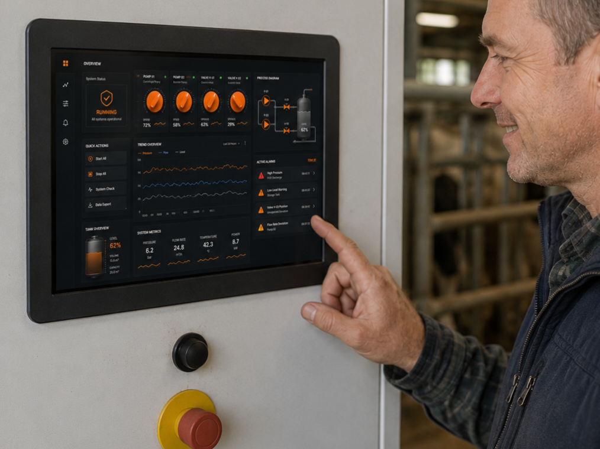
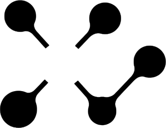
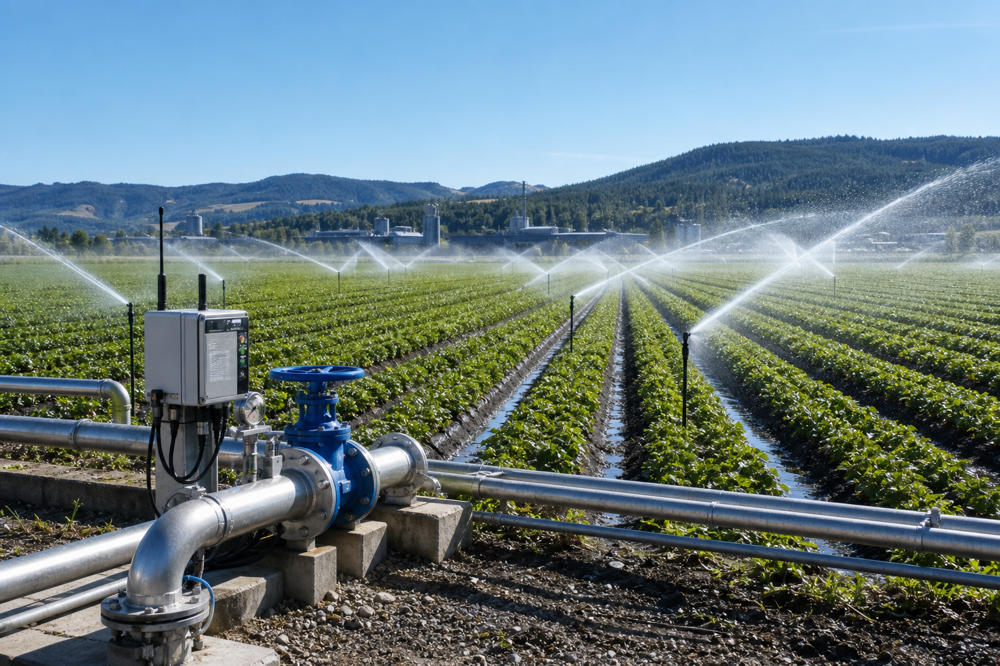
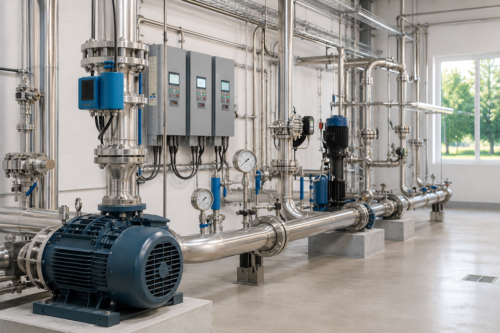

Användargränssnitt som gör komplex drift enklare att förstå.

ioNod
Skräddarsydd integration, styrning och manövrering
Industri, lantbruk, fastighet
ioNod utvecklar styrning, övervakning och integration för anläggningar där standardlösningar blir för dyra, för stela eller för svåra att förvalta över tid.
Vi bygger inte varje del. Men vi får helheten att fungera. Resultatet är färre komponenter, mindre teknik att underhålla och bättre kontroll även när anläggningen ligger på distans.

Användargränssnitt som gör komplex drift enklare att förstå.

Bevattning med läckagelarm, Osby

Fjärrstyrd grundvattentäkt, Malmö
Lösningen byggs efter anläggningen, inte efter färdiga lådor som skapar fler beroenden än de löser.
Drift, larm och användning utformas för platser där man inte alltid kan vara fysiskt på plats.
Tekniken får gärna vara avancerad. Hanteringen ska ändå kännas tydlig, snabb och trygg.
Erbjudande
ioNod utvecklar lösningar där styrning, användargränssnitt, larm, fjärråtkomst och befintlig hårdvara får arbeta tillsammans som ett sammanhållet system. Målet är inte fler delar. Målet är bättre funktion, färre felkällor och mindre att förvalta.
Anpassad styrning för maskiner, pumpar, ventiler, bevattning, klimat, teknikrum och andra driftsmiljöer där lösningen måste passa verkligheten.
Tydlig status, larmhantering och fjärråtkomst för anläggningar som behöver vara begripliga även när de står på annan ort.
Moderna, webbliknande gränssnitt för drift och överblick när standardpaneler känns för grova, för låsta eller för svåra att arbeta i.
Där det är klokast används existerande arkitektur vidare, men på ett smartare sätt som kan sänka både komponentkostnad och framtida underhåll.
Miljöer
Oavsett om det handlar om en bostad, en gård eller en större fastighet är grundfrågan ofta densamma: hur flera tekniska funktioner kan kopplas ihop på ett sätt som blir enklare att använda och lättare att lita på.
Styrning och integration för maskiner, processer och tekniska miljöer där drift, överblick och robust funktion måste fungera utan onödig systemtyngd.
Lösningar för bevattning, pumpar, flöden, drift och övervakning i miljöer där avstånd, robusthet och enkel åtkomst spelar stor roll.
Integration för byggnader och tekniska system där flera funktioner behöver samspela utan att skapa mer utrustning än nödvändigt.
Arbetssätt
ioNod utgår inte från färdiga paketeringar. Varje projekt formas för den faktiska miljön, de faktiska användarna och det faktiska driftansvaret.
När samma funktion kan nås med färre delar, färre gränser och mindre administration ska systemet inte göras tyngre än nödvändigt.
Lösningarna utformas för platser där drift, status och åtgärder måste vara hanterbara utan att någon står bredvid utrustningen.
Komplex funktion ska kunna presenteras på ett sätt som gör rätt beslut enklare, snabbare och tryggare att ta.
Ni möter samma tekniska tänkande från första diskussion till färdig lösning, i stället för ett kedjat mellanled av standardval.
På annan ort
Remote platser ställer högre krav på tydlig status, rätt larm, fjärråtkomst och lösningar som inte kräver onödiga servicepunkter. Därför prioriterar ioNod kontroll, överblick och robust enkelhet redan från början.
Kontakt
Om ni vill bygga styrning eller integration för industri, lantbruk eller fastighet utan onödigt tunga standardlösningar, är nästa steg ett kort samtal om vad anläggningen faktiskt behöver.